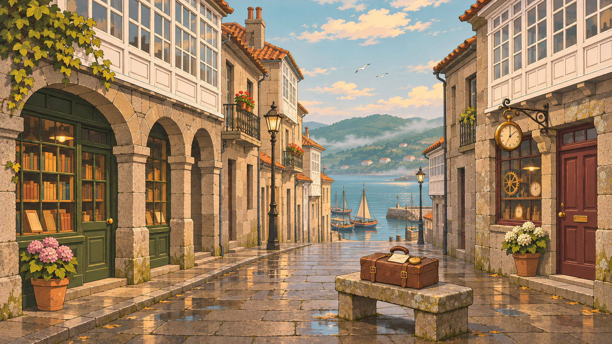

Profesor Criptóbal
✦Por fin, Vigo. Apenas hemos bajado del barco y ya tengo las botas mojadas. Espero que la carta de ese tal César justifique el viaje, Lola.

Por fin, Vigo. Apenas hemos bajado del barco y ya tengo las botas mojadas. Espero que la carta de ese tal César justifique el viaje, Lola.